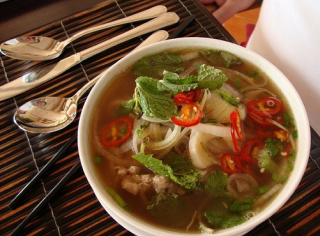

Назад
Вьетнамский суп «Фо» с курицей
Блюда стран мира


2 часа

2 порции
Ингридиенты:
Курица тушка - 1 тушка
Рисовая лапша - 100 г
Лайм
- 2 шт
Лук репчатый
- 1 шт
Кинза свежая
- 1 ½ пучка
Бобовые ростки
- 1 горсть
Перец чили красный
- 1 шт.
Имбирь корень
- 50 г
Лук зеленый
- 3 шт.
Лемонграсс (лимонное сорго)
- 2 стебля
Чеснок
- 3 зубчика
Морковь
- 1 шт.
Сельдерей корень
- 80 г
Соевый соус
- 2 ст. л.
Бадьян
- 1 шт.
Пошаговый рецепт
- Подготовьте продукты по списку.
- В кастрюлю положите тушку курицы, одну морковь, небольшой кусочек корня сельдерея и половину луковицы. Залейте двумя литрами холодной воды.
- Поставьте кастрюлю на огонь, доведите до кипения. После этого сразу уменьшите огонь и продолжайте варить бульон около часа, постоянно снимая пену.
- Выньте курицу и отложите в отдельную емкость. Овощи, которые остались от бульона, можно выкинуть, они больше не понадобятся.
- Подготовьте продукты для сервировки супа: один лайм нарежьте дольками, а острый перец чили — кружочками. Листики кинзы нарвите руками, а зеленый лук нарежьте перьями.
- В куриный бульон положите имбирь и лемонграсс, нарезанные соломкой. Туда же добавьте одну звездочку бадьяна, 2 ст. л. соевого соуса, чеснок и выжмите сок половины лайма.
- Варите бульон еще 10 минут, после чего шумовкой извлеките чеснок, бадьян и лемонграсс. Процедите бульон и снова верните его на огонь.
- Опустите в кипящий бульон рисовую лапшу и варите ее до готовности. На это уйдет 5–6 минут.
- Курицу нарежьте крупным кусочками.
- На дно порционной тарелки положите лапшу (это удобно делать щипцами для пасты), сверху выложите кусочки курицы, бобовые ростки, перец чили, лук и кинзу.
- Теперь суп на 2/3 нужно залить горячим бульоном. По вкусу добавьте в суп сок лайма.